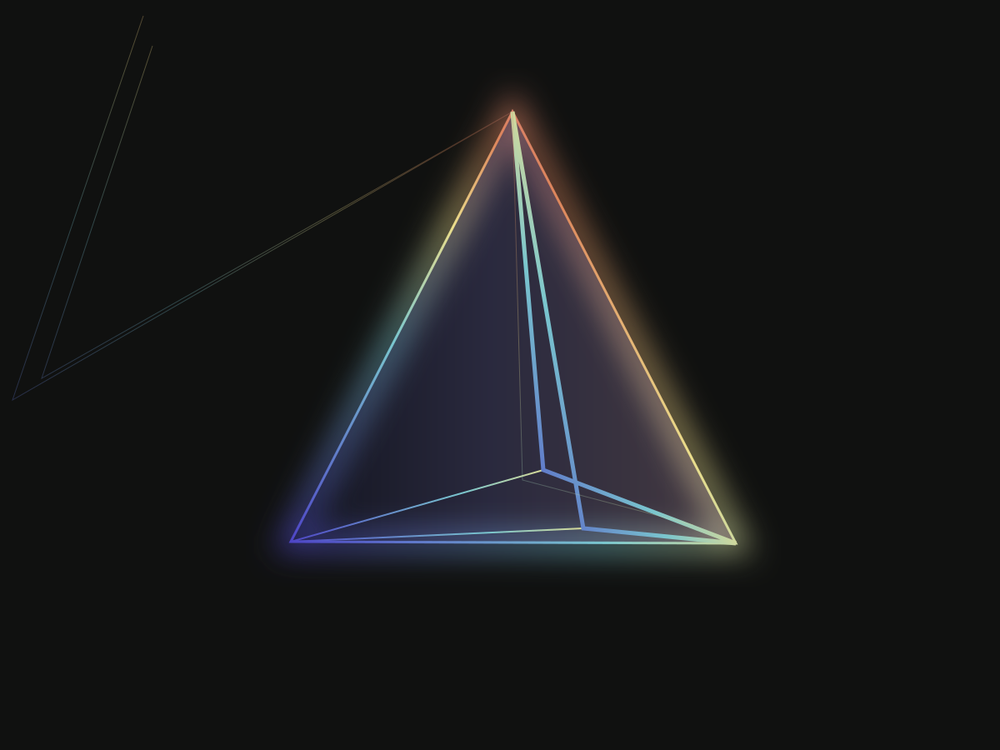

An experiment in perception Explore the studies
AFTERIMAGE

A living light study
Light.
Light.
Without limits.
A single beam. A thousand ways to see it.
Move slowly. Watch it shift.
Find your frequency.
Still view. Live light is unavailable in this browser.
Light is the medium. You are the variable.Scroll to observe
01 — The observation
Nothing to hold.
Something
to feel.
Light has no fixed form. It bends, separates, and leaves a trace long after you look away.
AFTERIMAGE is a place to linger with that feeling. Three studies of the same light. Each changed by your presence.
Take a closer look02 — The spectrum
One source. Three states.03 — The impressionYours to keep
Some moments
stay with you.
A little light to take away.
Save your composition as a personal art print.